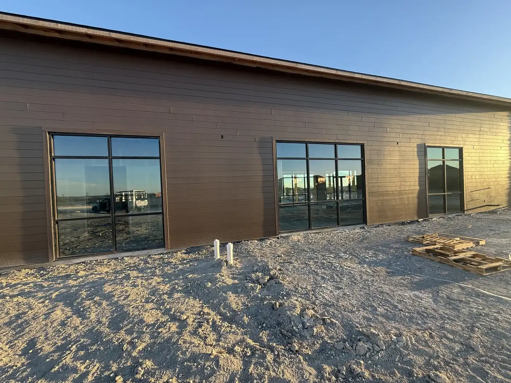

FREQUENTLY ASKED QUESTIONS
Glass Service FAQs for Boerne & San Antonio, TX
Quick, direct information about residential, commercial, emergency, storefront, custom, shower, mirror, and window glass service paths in Boerne and San Antonio.
FAQ
Master Glass Solutions FAQs.
For a specific property, photo, schedule, or glass condition, call or request a quote so the team can move beyond the general answer.
See every questionWhat glass services does Master Glass Solutions provide?+
Master Glass Solutions provides commercial and residential glass installation and fabrication, including storefront glass, emergency glass repair, custom glass, shower enclosures, mirrors, and window glass replacement in Boerne and San Antonio.
Do you offer emergency glass repair?+
Yes. Emergency glass support is available 24/7 for urgent broken glass situations. Call 210-370-3700 so the team can understand the opening, safety concern, and next step.
Do you work on both homes and commercial properties?+
Yes. Master Glass Solutions serves both residential and commercial properties. Home work includes shower enclosures, mirrors, window glass replacement, table tops, and custom pieces. Commercial work includes storefront systems, entry doors, interior partitions, architectural glazing, and healthcare glazing such as patient-room sliding doors. Emergency repair covers both. Call 210-370-3700 with the property address and the type of glass work you need.
How do I request a glass estimate?+
Call 210-370-3700 or use the quote form. The most helpful starting details are the property location, the type of glass work, approximate dimensions or photos if available, and your desired timing.
What types of residential glass work do you provide?+
Residential services include frameless and framed shower enclosures, custom-cut mirrors for walls and vanities, window glass replacement for existing openings, glass table tops, and other custom home glass. Broken residential glass is also covered by the 24/7 emergency line. Send photos, the rough dimensions, and the property address to 210-370-3700 or use the quote form, and the team will confirm the measurements on site before fabricating.
What commercial glass services do you offer?+
Master Glass Solutions provides commercial glass installation and fabrication, including storefront systems, entry doors, interior partitions, architectural glazing, custom glass, and 24/7 emergency repair. Recent commercial work includes patient-room sliding door systems for a San Antonio spine clinic, multi-story architectural glazing, and black-frame storefront installations on new construction. Call 210-370-3700 or send the property address, photos, and project timeline to start a commercial estimate.
How much does glass replacement cost?+
Glass replacement costs vary by type, size, and complexity. Residential window replacement typically ranges $150-$500 per pane. Commercial storefronts range $500-$2,000+. Call 210-370-3700 for a free estimate based on your specific project.
What do I do if my glass breaks?+
If glass breaks, call 210-370-3700 immediately. Master Glass Solutions offers 24/7 emergency repair. The team can discuss the safety concern, opening size, and whether temporary or permanent repair is needed.
Can you repair broken glass?+
Yes. Broken glass repair and replacement is handled for both residential and commercial properties, covering shattered windows, damaged glass doors, broken storefronts, accident damage, vandalism or break-ins, and weather damage. If the break affects safety, security, or weather protection, call 210-370-3700 for 24/7 emergency support rather than using the form. The crew can board up the opening immediately and return with replacement glass once it is cut.
Do you work on weekends?+
Emergency glass support runs 24/7, including weekends and holidays — past emergency jobs have included a storefront door replaced on a Sunday. For non-emergency work such as shower enclosures, mirrors, or planned commercial glazing, call 210-370-3700 during the week to discuss timing and scheduling. Fabrication lead time depends on the glass and hardware, so calling early with photos and rough dimensions helps secure a workable date.
What areas do you serve?+
Master Glass Solutions serves Boerne, San Antonio, and surrounding areas including Seguin, New Braunfels, Blanco, Wimberley, Comfort, and neighboring communities. Call 210-370-3700 to confirm service availability for your location.
How long does glass installation take?+
Installation time depends on the project scope. Simple window or mirror installation may take a few hours. Custom shower enclosures or storefronts typically take 1-3 days. Call 210-370-3700 for a timeline estimate based on your specific project.
What is a frameless shower enclosure?+
A frameless shower enclosure is custom tempered glass without a metal frame, creating a clean, modern look. Master Glass Solutions fabricates and installs frameless enclosures with precision hardware and alignment that makes the installation look finished and intentional.
Do you offer custom glass solutions?+
Yes. Master Glass Solutions specializes in custom glass work. Whether you need a specific size, shape, finish, or application, the team can fabricate and install glass solutions built around your exact project requirements.
What is tempered glass and why is it used?+
Tempered glass is heat-treated to be 4-5 times stronger than standard glass. When broken, it crumbles into small pieces rather than sharp shards, making it safer for bathrooms, storefronts, and other high-traffic areas. Master Glass Solutions uses tempered glass for most residential and commercial applications.
Can you install glass in commercial storefronts?+
Yes. Master Glass Solutions provides professional commercial storefront glass installation and fabrication. Services include entry door systems, window glass, interior partitions, and repair work designed for daily business use and professional appearance.
Do you offer same-day emergency glass repair?+
Master Glass Solutions offers 24/7 emergency glass support. Same-day repair availability depends on the time of call and current workload. Call 210-370-3700 immediately to discuss your urgent glass need and get a response time estimate.
What payment methods do you accept?+
For specific payment options and financing information, call 210-370-3700 or request a quote. The team will discuss payment methods and any available options for your project.